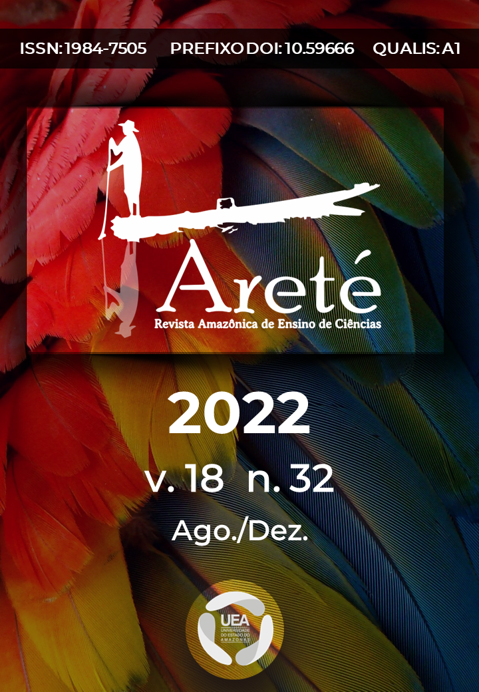
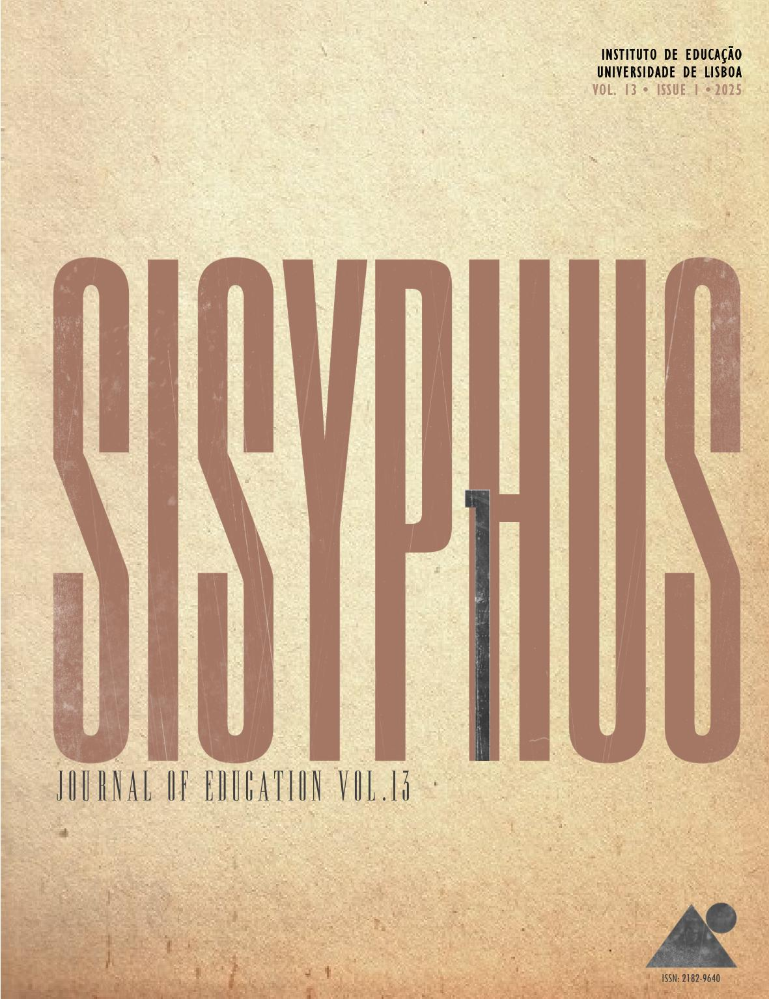

Amanhã é o grande dia do lançamento dos livros "Invencionices floresteiras" e "En-cantações de um devir-mulher amazônida" e do documentário "Mulheres Amazônidas: tecelãs dos rios"!




"Quem anda no trilho é trem de ferro. Sou água que corre entre pedras - liberdade caça jeito."
- Manuel de Barros